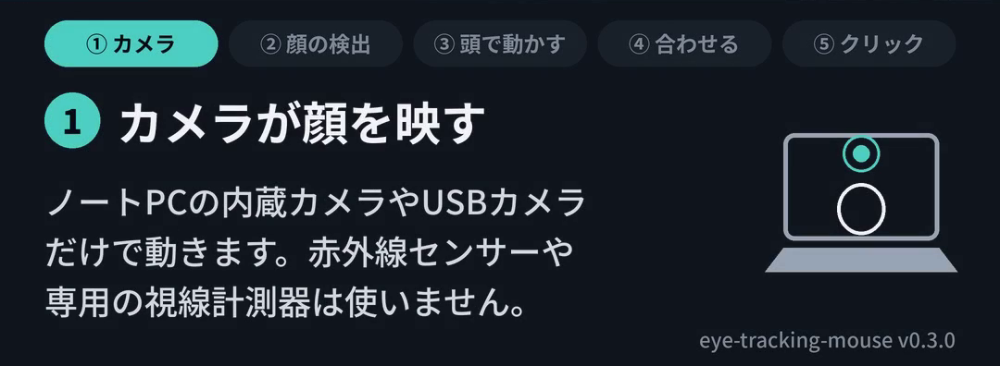
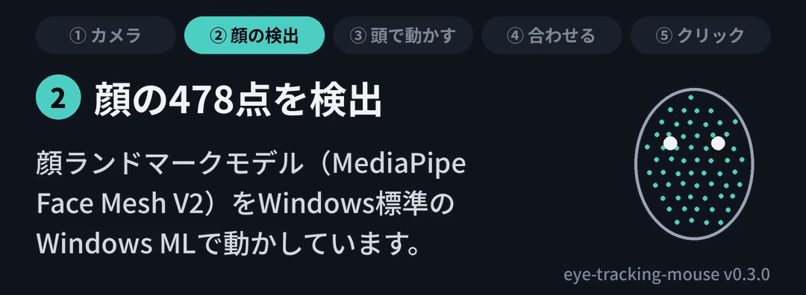
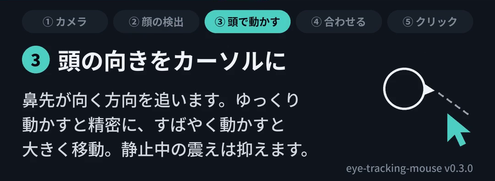
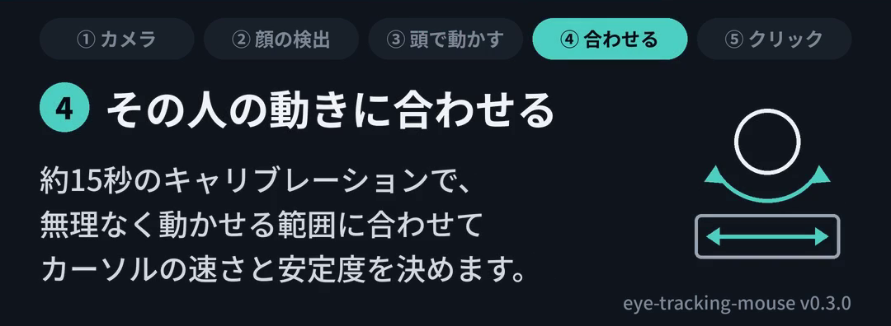
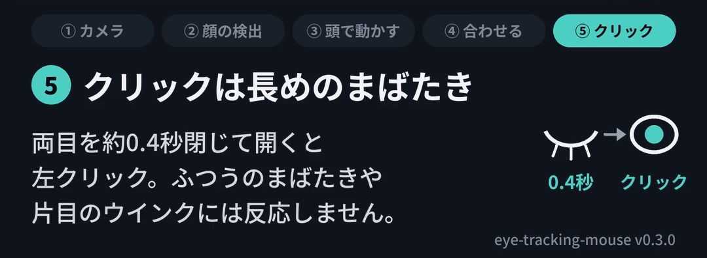
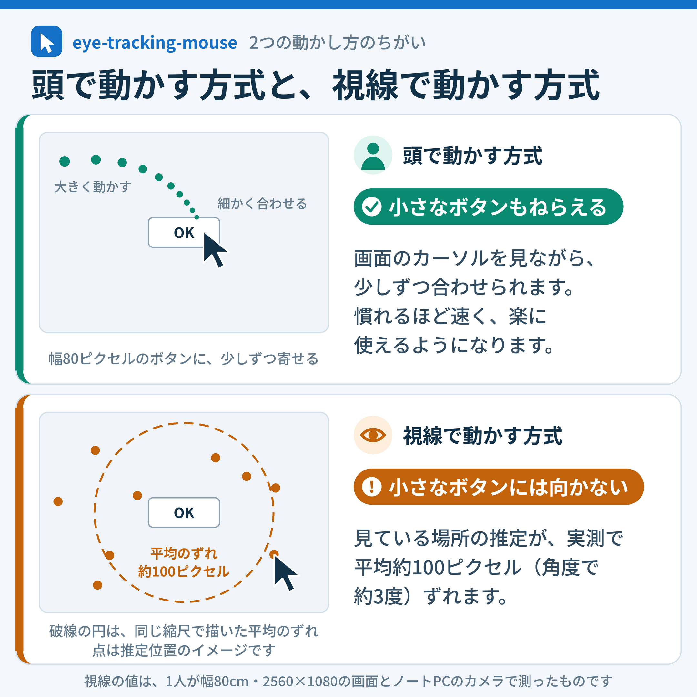

Windows 用・無料・オープンソース・実験版
手を使わずに、マウスを操作する
頭の動きでカーソルを動かし、長めのまばたきでクリックします。専用の機器は要りません。ノートPCの内蔵カメラ(または USB カメラ)だけで動きます。
体が不自由でマウスを使いにくい方や、その支援に関わる方に試していただきたくて作りました。
Windows 11(64ビット)用、v0.3.0。ほかの版はリリースの一覧にあります。
できること・まだできないこと
できること
- 頭を少し動かすと、カーソルが動きます。
- 両目を約0.4秒閉じて開くと、左クリックになります。ふつうのまばたきや片目のウインクでは押されません。
- 動かし方の速さを、その人に合わせられます(約15秒)。
まだできないこと
- 右クリック
- ドラッグ
- スクロール
- ゲームの視点操作(FPS など)
必要なもの
- Windows 11 のパソコン(64ビット)
- カメラ(ノートPCの内蔵カメラ、または USB カメラ)
- 費用はかかりません。
- カメラの映像は、そのパソコンの中だけで処理してすぐ捨てます。保存も送信もしません。
インストールのしかた(約3分)
キーボードとマウスを少し使います。ご本人が難しいときは、支援者の方が代わりに行ってください。
- 上の「ダウンロード」ボタンを押します。
- Edge で「一般的にダウンロードされていません」と出たら、Edge の手順で保存します。
- ダウンロードしたファイル(
eye-tracking-mouse-v0.3.0-setup.exe)を開きます。ブラウザーのダウンロード一覧か、エクスプローラーの「ダウンロード」フォルダーにあります。 - 青い画面で「Windows によって PC が保護されました」と出たら、青い画面の手順で進めます。
- 画面の案内に沿って進めます。
- ライセンスの画面: 「同意する」を選んで「次へ」
- インストール先: そのまま「次へ」(管理者のパスワードは求められません)
- デスクトップのアイコン: 必要ならチェックを入れて「次へ」
- 「インストール」を押す
- 最後の画面で「eye-tracking-mouse を起動する」にチェックが入ったまま「完了」を押します。
警告が出たとき
Windows や Edge は、作者を確かめられないファイルや、ダウンロードした人がまだ少ないファイルに警告を出します。このソフトはまだ電子署名(有料の証明書が必要です)をしていないので、この警告が出ます。プログラムの中身(ソースコード)はGitHubですべて公開しています。不安なときは、無理に進めずに、詳しい方に相談してください。
Edge でダウンロードが止まったとき
ダウンロード一覧に「〜は一般的にダウンロードされていません。開く前に信頼できることを確認してください」のように出て、ファイルが開けないことがあります。
- ダウンロード一覧で、そのファイルの上にマウスを置き、右に出る「…」(その他のアクション)を押します。
- 「保存」(表示によっては「保持する」)を押します。
- 確認の画面が出たら、「詳細表示」(または「もっと見る」)を押し、「保持する」(または「それでも保持する」)を押します。
Edge の版によって、ボタンの名前が少しちがうことがあります。Chrome で似た警告が出たときも、同じように「保存」や「保持」を選びます。
「Windows によって PC が保護されました」と出たとき
ファイルを開くと、青い画面に「Microsoft Defender SmartScreen は認識されないアプリの起動を停止しました」と出ることがあります。「実行しない」しか見えませんが、次の手順で進めます。
- 文章の中の「詳細情報」を押します。
- 「発行元: 不明な発行元」と表示されます。電子署名がないためで、ふつうのことです。
- 下に出てくる「実行」を押します。
この画面が出るのは、最初に開くときだけです。
使いはじめる(約5分)
このソフトには、開くウィンドウがありません
動いている間は、画面右下(時計のそば)の「タスクトレイ」(通知領域)に、目の形の小さなアイコンがあるだけです。起動すると「eye-tracking-mouse を開始しました」と通知が出ます。
- アイコンが見えないときは、時計の左にある上向きの矢印 ^ を押します。隠れているアイコンが並びます。
- アイコンを右クリックするとメニューが出ます。一時停止、頭のキャリブレーション、終了はここから選べます。
- あとから起動するときは、スタートメニューの「eye-tracking-mouse」を選びます。
- カメラの正面に座ります。
- Ctrl と Alt を押しながら H を押します(タスクトレイのメニューの「頭のキャリブレーション」でも同じです)。
- 画面の案内に従って、中央を3秒見たあと、左・右・上・下の点へ、楽に向けられるところまで顔を向けます(約15秒)。カーソルの速さが、その人に合います。
- 頭を動かしてカーソルを動かし、両目を約0.4秒閉じて開いて、クリックしてみてください。
困ったとき
- カーソルを止めたい: 実際のマウスを動かすと、すぐに手を放します。Ctrl+Alt+P で一時停止もできます。
- 速すぎる・遅すぎる: もう一度 Ctrl+Alt+H で合わせ直します。
- 毎回自動で起動したい: Windows+R で
shell:startupと入力して開き、スタートメニューの eye-tracking-mouse のショートカットをそこへコピーします。 - 終わりたい: タスクトレイのアイコンを右クリックして「終了」、または Ctrl+Alt+Q。
- 削除したい: Windows の「設定」→「アプリ」→「インストールされているアプリ」で eye-tracking-mouse を選び、「アンインストール」。
しくみ





頭で動かす方式と、視線で動かす方式
最初は頭で動かす方式になっています。画面のカーソルを見ながら少しずつ合わせられるので、小さなボタンもねらえます。視線で動かす方式も選べますが、実測で平均約100ピクセル(角度で約3度)ずれるため、小さなボタンには向きません。

ご注意
- まだ実験版です。試したのは開発者1人だけです。大事な作業の前には、マウスやキーボードでも操作できるようにしておいてください。
- 無料で、個人でも、病院・施設・学校・会社でも使えます(Apache License 2.0)。無保証です。
感想を聞かせてください
「この動きができない」「この姿勢だと使えない」といった声が、改良にいちばん役立ちます。GitHub の Issues に書いてください(GitHub のアカウントが必要です)。